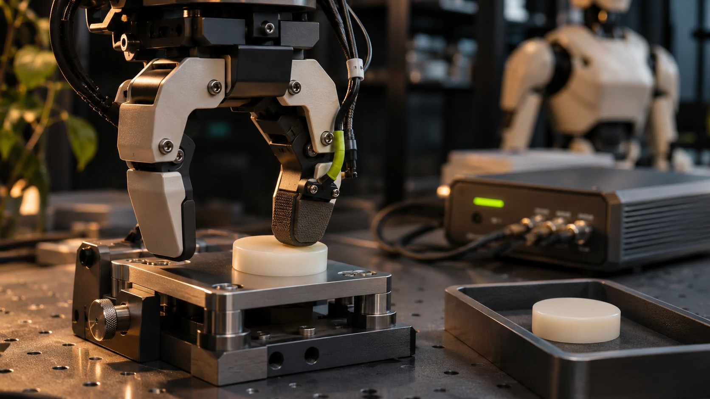

Keep sensor identity, baseline conditions and processing settings with each observation. A changing contact signal is a measurement to interpret, not an automatic statement of force or grasp quality.
A humanoid closes its gripper and a colorful tactile display changes. That is an encouraging integration milestone, but the display alone does not explain what the application has measured. The signal might be a contact image, a processed estimate or several channels with different meanings. Before building a decision around it, the team needs a repeatable description of the sensor and the conditions that produced the observation. This guide proposes a practical commissioning record for tactile data. It does not provide a calibration recipe, establish a universal contact threshold or report an independent sensor test.
Identify the observation before interpreting it
Begin with the exact sensor and acquisition path. Record the model, hardware revision, physical location, device identifier, firmware and software version where available. Keep the connection between the physical pad and the application channel explicit. If two fingertips are exchanged or cables are moved, another engineer should still be able to tell which device produced a saved observation.
The official DIGIT interface documentation illustrates this principle by connecting to a sensor through its unique serial number and documenting stream configuration. That archived repository is useful reference material, not evidence of current maintenance or a recommendation to install it on an unrelated sensor. Save the installed configuration and applicable supplier documentation with the experiment. Distinguish raw readings from any output that has already been transformed by the acquisition software.
Describe the sensing method and its limits
Ask the supplier what each output represents, including its units, coordinate convention and processing assumptions. Avoid interpreting every tactile visualization as a calibrated force map. A pressure channel, an image of a deforming contact surface and an estimated slip state answer different questions, even when their displays look similarly informative. Name those distinctions in the dataset rather than leaving them in a verbal explanation.
XELA describes distributed sensing points that observe normal and shear components, and a software path for visualization, calibration and compensation. Its description is a useful example of why channel meaning and processing settings belong together. It does not establish the meaning of another product’s output. Ask which model-specific documentation applies to the selected device and what evidence is required before using a processed value in the intended application.
Capture a no-contact condition that can be described
Agree on an observation sequence with the responsible integrator under the robot manufacturer’s supported commissioning conditions. Include a clearly identified period without object contact. Record the robot pose, sensor arrangement, relevant environment and acquisition settings alongside it. A saved baseline should explain how the team established the absence of intended contact, rather than simply assuming that the first frame of a recording was neutral.
Keep the original observations as well as any baseline-subtracted view used for analysis. If the supplier requires initialization, compensation or calibration, follow the exact product procedure and record when it was performed. Do not invent a zeroing method or repeatedly reset a signal until it looks convenient. If a supposedly comparable no-contact observation changes during the session, preserve that change as a question to investigate instead of silently replacing the earlier reference.

Compare contact with documented object conditions
Choose a small set of samples that answers a specific application question. Identify each object, the intended contact region and its surface condition. Note relevant packaging, films, coatings or visible contamination, and keep preparation consistent with the object’s intended use and supplier guidance. A new label or a different surface finish can change the experiment even when the object retains its familiar name.
Record contact events together with the configuration and the observations available through the supported interface. Keep the distinction between what the team commanded and what it actually observed. A commanded closure does not by itself prove a particular contact force, and a changing signal does not automatically prove a secure grasp. Compare like conditions where possible. If several properties change together, describe the result as a comparison between complete conditions rather than crediting a single sensor feature.
Keep drift questions separate from processing choices
Review the no-contact and contact observations over the relevant session instead of relying only on a selected screenshot. Record pauses, reconnects, software changes and any supplier-defined initialization event. If the baseline appears to move, state the observation precisely: which channel changed, under which conditions and in which saved representation. Do not label every unexplained difference as sensor drift before checking the acquisition and processing record.
Preserve the settings used for filtering, compensation or learned interpretation. A change in a downstream model can alter the displayed result without a change in the physical contact. Simulation can help examine software assumptions, but it should be labeled separately. The archived official TACTO project describes a simulator for vision-based tactile sensors and explicitly limits what it claims about contact dynamics. Simulated observations therefore do not replace evidence from the installed sensor and object.
Make the handoff useful to the next experiment
Prepare a compact evidence package containing the sensor identity, configuration, object descriptions, no-contact observations and representative contact records. Include the processing versions and the question the comparison was meant to answer. State the conclusion at the level supported by those records. A repeatable signal difference may justify a supplier discussion while still falling short of a validated application decision.
Ask the responsible team which changes require another commissioning review: a replacement pad, a moved device, revised firmware, a different object surface or a changed interpretation model. Preserve the accepted baseline and its history when a revision is approved. This turns tactile data into maintained integration evidence, with enough context for purchasing, engineering and the supplier to discuss the same configuration. The next sensor upgrade can then be evaluated against a known question rather than an attractive display.
Your next step.
- Record the device identity, physical channel and software configuration.
- Distinguish raw observations from processed estimates.
- Preserve a documented no-contact condition and its original data.
- Keep object surface conditions with the contact observations.
- Review unexplained changes before redefining the baseline.
Sources & further reading
Primary sources and manufacturer documentation for the examples and further investigation. Recommendations in this article are HUMANOID’s editorial guidance.
XELA Robotics: tactile sensing technology ↗Meta: archived DIGIT interface documentation ↗Meta: archived TACTO simulator documentation ↗Prepared and references reviewed: 20 November 2026. This original practical guide does not report an independent hardware test. Follow model-specific supplier procedures; archived software references do not establish current support or compatibility.